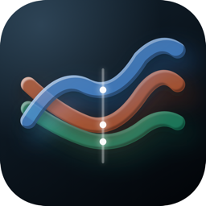

KarteriaKarteria ("l'app") è un'app per iPhone con un'app companion per Apple Watch, sviluppata da Valerio Schips ("lo sviluppatore", "noi"). Questa informativa spiega quali dati usa l'app, dove sono conservati, quando (e solo quando) qualcuno di questi arriva allo sviluppatore o a terzi, e quali diritti hai.
Lo sviluppatore, Valerio Schips (Italia), è titolare del trattamento dei dati personali che riceve direttamente: le email di assistenza e gli export dei dati che scegli di inviargli (§7). Contatto: noserv_report@hotmail.com.
I dati che restano sui tuoi dispositivi (§3–§6) sono elaborati dall'app sotto il tuo controllo. Lo sviluppatore non vi ha accesso e non può leggerli, copiarli o cancellarli.
Con il tuo permesso, dato tramite la finestra di sistema di Apple, l'app per iPhone legge da Apple Salute i tipi di dato seguenti. Sono usati solo per calcolare e mostrare le schermate Panoramica, Corse, Confronto e Sonno e i relativi grafici.
HKWorkout) con statistiche, eventi (pause, riprese, soste automatiche, segmenti) e metadati (indoor/outdoor, meteo, dislivello, fuso orario, dispositivo di registrazione), più i riepiloghi giornalieri degli anelli Attività.Quando in Apple Salute arrivano dati nuovi (per esempio a fine corsa o dopo una notte), l'app può leggerli in background per tenere aggiornati i grafici. L'app per iPhone non modifica e non cancella nulla in Apple Salute.
Durante una corsa avviata dal Watch, l'app companion:
Karteria non usa la posizione fuori da un allenamento attivo sul Watch, e l'app per iPhone non chiede mai la tua posizione attuale.
iPhone ↔ Watch. Le due app si scambiano dati direttamente tra i tuoi dispositivi tramite WatchConnectivity di Apple: valori di riferimento della frequenza cardiaca, programma settimanale e metriche che hai scelto di vedere sul Watch (iPhone → Watch), brevi annunci vocali di chilometri e ripetute (Watch → iPhone). Nulla passa dallo sviluppatore.
Apple gestisce queste richieste secondo la propria informativa sulla privacy. Lo sviluppatore non ne riceve nulla.
Le tue scarpe (nome, data di acquisto, chilometraggi, corse che vi associ), le foto delle scarpe, il programma settimanale e le impostazioni dell'app. Le foto si scelgono con il selettore di foto di Apple: l'app riceve solo la foto che selezioni e non ha accesso al resto della libreria. Tutto questo resta sul tuo dispositivo.
Solo nei casi seguenti, e ognuno parte da te.
| Caso | Cosa riceve lo sviluppatore | Finalità e base giuridica | Per quanto tempo |
|---|---|---|---|
| Scrivi all'assistenza | Il tuo indirizzo email, il messaggio ed eventuali allegati | Risponderti (GDPR art. 6(1)(b) e (f)) | Fino alla chiusura della richiesta, poi cancellati entro 12 mesi al massimo |
| Invii un export dei dati (Impostazioni → "Condividi DB + diagnostica") | Una copia del database locale dell'app, che contiene i tuoi dati di Salute, e un riepilogo diagnostico | Solo per analizzare il problema che hai segnalato. Dai il tuo consenso esplicito (GDPR art. 9(2)(a)) scegliendo di inviarlo | Cancellati alla risoluzione del problema, e comunque entro 90 giorni dalla ricezione. Puoi chiederne la cancellazione anticipata in qualsiasi momento |
| Hai attivato "Condividi con gli sviluppatori" nelle impostazioni di iOS/watchOS, oppure sei un tester TestFlight | Report di crash e statistiche d'uso anonime raccolte e inoltrate da Apple, ed eventuale feedback TestFlight che invii | Correggere crash e migliorare la stabilità (tua scelta nelle impostazioni Apple; GDPR art. 6(1)(f)) | Per il tempo in cui li conserva App Store Connect |
Le email di assistenza sono conservate presso il fornitore di posta dello sviluppatore (Microsoft Outlook/Hotmail), che può trattarle fuori dall'Unione europea in base all'EU–US Data Privacy Framework e alle clausole contrattuali tipo della Commissione europea.
I dati ricevuti dallo sviluppatore non vengono mai venduti, condivisi con terzi, usati per pubblicità o marketing, né per addestrare modelli di intelligenza artificiale.
In base al GDPR (articoli 15–22) puoi chiedere allo sviluppatore l'accesso ai dati che conserva su di te (§7), la loro rettifica, cancellazione, limitazione o portabilità, e puoi opporti al loro trattamento. Puoi revocare il consenso in qualsiasi momento. La revoca non incide sul trattamento già avvenuto. Scrivi a noserv_report@hotmail.com: riceverai risposta entro un mese.
Per i dati che non lasciano mai i tuoi dispositivi (§3–§6) mantieni il pieno controllo direttamente, con le impostazioni descritte al §8.
Hai anche il diritto di proporre reclamo a un'autorità di controllo: in Italia il Garante per la protezione dei dati personali (garanteprivacy.it), oppure l'autorità del Paese UE in cui vivi o lavori.
Punteggi e indicatori mostrati dall'app (per esempio il punteggio del sonno o il carico di allenamento) sono stime informative calcolate sul tuo dispositivo. Non producono decisioni con effetti giuridici o significativi analoghi (GDPR art. 22) e non sono usati per profilazione.
Karteria non è un dispositivo medico e non fornisce diagnosi, consigli medici o indicazioni terapeutiche. I dati e le metriche mostrati servono solo al monitoraggio personale dell'attività fisica e a scopo informativo. Rivolgiti a un medico prima di qualsiasi decisione sulla tua salute.
Karteria non è destinata a persone con meno di 16 anni e lo sviluppatore non riceve consapevolmente loro dati. Se ritieni che una persona con meno di 16 anni abbia inviato dati allo sviluppatore, scrivi all'indirizzo qui sotto e verranno cancellati.
Quando questa informativa cambia, cambia la data "Ultimo aggiornamento" in cima. Se una modifica riguarda l'uso o la condivisione dei dati, viene annunciata anche nelle note di rilascio dell'app prima che entri in vigore.
Questa informativa è disponibile in italiano e in inglese. In caso di differenze tra le due versioni, prevale quella italiana.
Per qualsiasi domanda su questa informativa o sui tuoi dati: noserv_report@hotmail.com